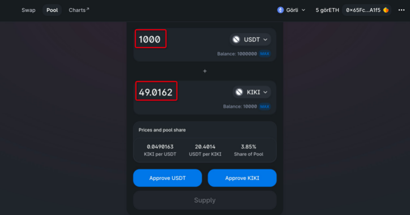
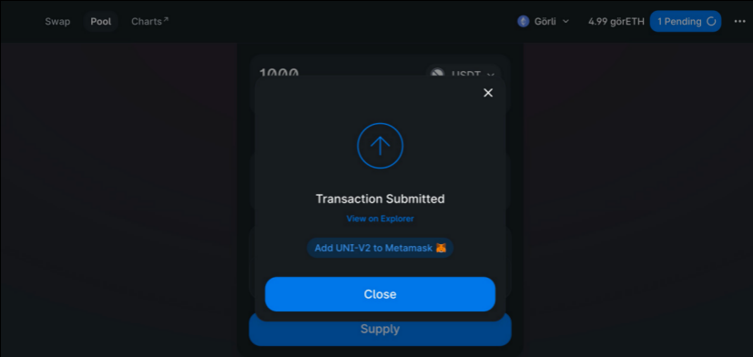
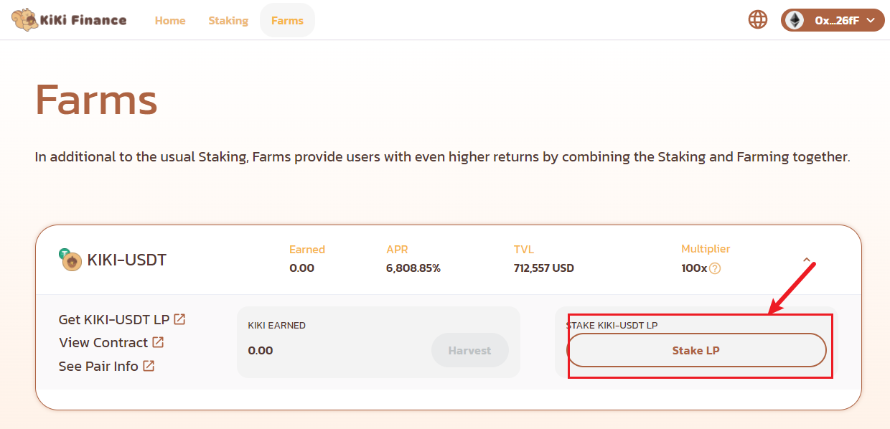
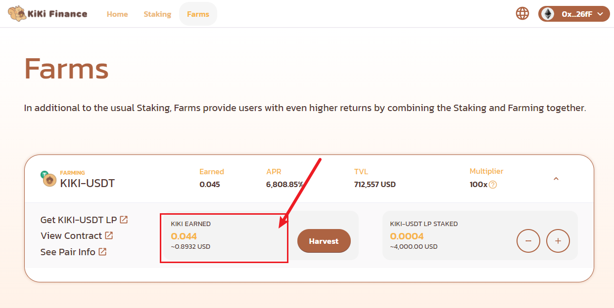
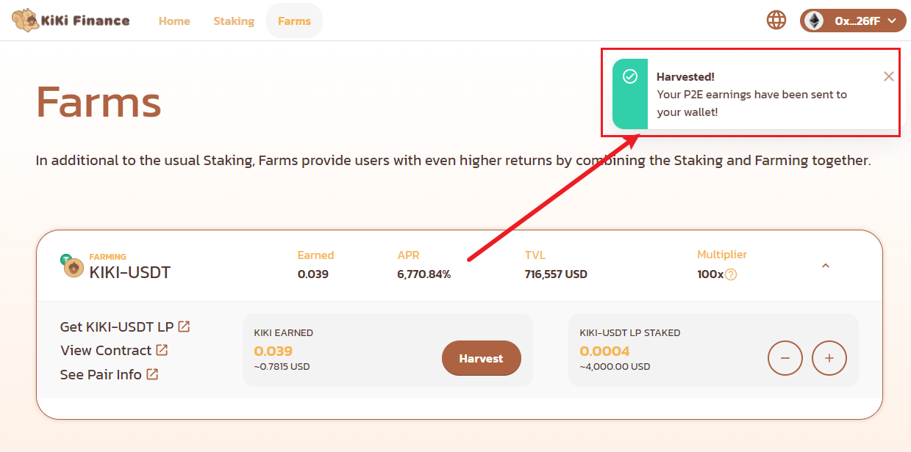

Farm 指南
平台除了Staking质押，还提供高收益的流动性挖矿池，用户通过Staking+Farm的组合模式可以获得比普通Staking更高的收益回报。
为了提高流动性提供者的收益，并促进KiKi Finance的生态系统，我们为LP持有者提供了Staking功能。在KiKi提供流动性的用户，可以在KiKi Farms页面上质押交易对，以挖掘额外的KiKi币。Staking的目的是持续丰富KiKi生态系统，为KiKi Finance的贡献者带来更多的利益。
任何此页面的操作，都是在钱包已连接的前提下。关于钱包的安装与连接，详细请参看：
Stake LP Tokens
点击 Farms 并选择交易对。

点击 Get KIKI-USDT LP 跳转至 Uniswap 页面。

输入你想挖矿的两个币种分别对应的数量。

点击 Approve USDT 和 Approve KIKI 分别授权交易币对。

点击 Confirm Supply 确认交易。

提交交易后，返回KiKi页面

点击 Enable, 并在钱包中批准LP消费，稍等片刻后，Enable按钮会变更为Stake LP

点击 Stake LP 进行质押挖矿。

输入你想质押挖矿的交易对代币数量，并点击 Confirm，并在弹出的钱包页面中确认交易

链上确认交易后，您将能看到质押的交易代币和挖矿数量如下：

Harvest
在farm页面，可以看到你的质押收入，如果你想将收益纳入你的账户，请按照以下流程进行harvest
点击Harvest, 并在弹出的钱包对话框中，确认交易

等待链上交易确认完成后，你将看到这样的提示，并可以在你的钱包中，看到通过farm得到的KiKi已到账

Unstake LP Tokens
该操作会影响你的收益，请谨慎操作
在你需要取消LP的质押时，请按以下流程操作
点击以下页面所表示的“-”号 （“+”号表示你可以继续质押你的LP Token）

输入你要取消质押的LP Token的数量，并点击Confirm,在弹出的钱包对话框中，确认交易

等待链上的交易完成后，页面会有一条unstake成功的提示,表示Unstake LP Tokens成功